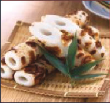
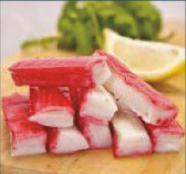
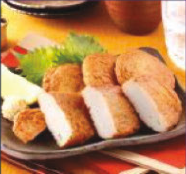
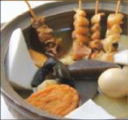

There are a lot of restaurants like My Kamaboko. It's just that none of them are in London. Or Britain. To be sure of finding another place like this you will have to head to Tokyo, where they cluster like so many pigeons around a split sack of seed. Here, restaurants with just one chef and seven seats are hardly common. But it really couldn't be simpler: an open kitchen where the young chef, a graduate of Mayfair's buttock-clenchingly expensive Umu, does his intense, detailed, obsessive-compulsive
Read More

Chikuwa

Satsuma

Kani
